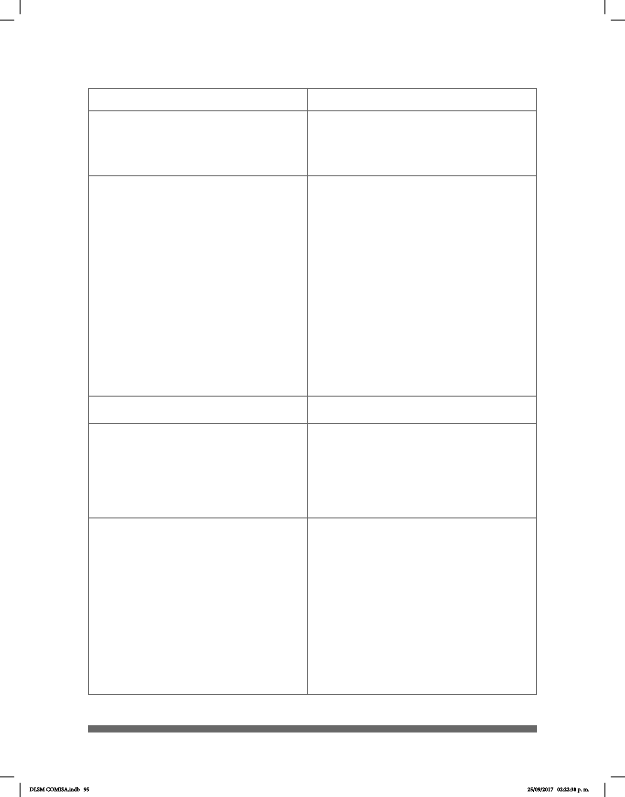

95
4) Ojos [Oc]
7) Boca [Os]
8) Labios [Lab]
6)Nariz [Na]
5) Mirada [Mir]
Abiertos (inusualmente)
Semi-cerrados
Cerrados
Apretados
Abierta
Inusualmente abierta
Semiabierta
Abierta mostrando los dientes
Acción de masticar
Acción de reír
Retraídos
Distendidos
Soplando
Protruidos
Abiertos
Comisura hacia abajo
Comisura hacia arriba
Labio inferior hacia adelante
Labios redondeados abiertos [a]
Labios redondeados medio [o]
Labios redondeados cerrados [u]
Fruncida
Al frente
Arriba
Abajo
A un lado
Izquierda
Derecha
Arriba a la derecha
Arriba a la izquierda
Abajo a la derecha
Arriba a la derecha
Arriba a la izquierda
Abajo a la derecha
Abajo a la izquierda
Al frente+cabeza agachada
Espacio combinado
Rasgo No Manual Modo
DLSM COMISA.indb 95 25/09/2017 02:22:38 p. m.